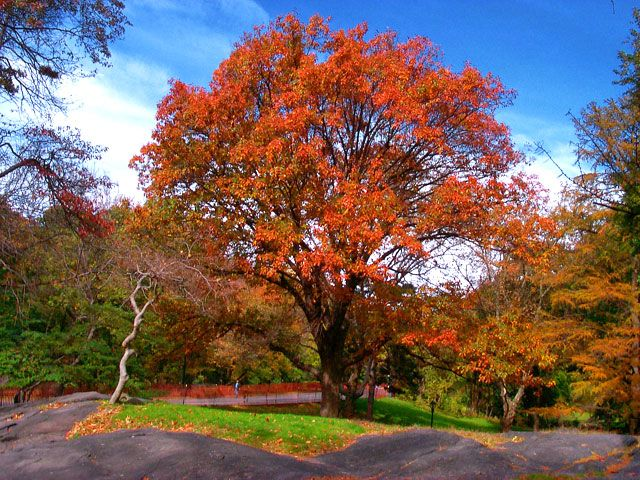

New Jersey
One of the original 13 colonies, New Jersey was an important battleground during the American Revolution. New Jersey is located in the heart of the bustling Atlantic corridor, nestled between New York and Pennsylvania, and it has the highest population density of any state. New Jersey was named for the island of Jersey on the English Channel. Its long and beautiful coastline has long made the state a popular vacation destination, with over 50 seaside resort towns including Asbury Park, Atlantic City and Cape May. The state also boasts an impressive musical legacy–Bruce Springsteen, Jon Bon Jovi and Frank Sinatra all hail from New Jersey. It is known as an industrial center, but earns its “Garden State” nickname as a leading producer of cranberries, blueberries and tomatoes.
| Date of Statehood | Capital | Population | Size |
|---|---|---|---|
| December 18, 1787 | Trenton | 9.29 million | 8,723 square miles |
Motto
Liberty and Prosperity
Flower
Violet
Bird
Eastern Goldfinch

Tree
Red Oak
Interesting facts
- One of the first Native American reservations in the United States was established in Burlington County in 1758 for the Lenni-Lenape tribe. The first and only reservation in New Jersey, the Brotherton Reserve, was sold back to the state in 1801 by the remaining members of the tribe, who moved north to join relatives in New Stockbridge, New York.
- The first virtually complete dinosaur skeleton discovered in North America was unearthed in 1858 by William Parker Foulke in Haddonfield, New Jersey. Hadrosaurus foulkii, as it was later named, proved that the existence of dinosaurs was real, and provided shocking evidence that dinosaurs could be bipedal. In 1868, it became the first dinosaur skeleton in the world to be mounted on display.
- The world’s first boardwalk was constructed in Atlantic City in 1870 to reduce the amount of sand tracked into nearby hotels and railroad cars. As hotels, shops, restaurants and casinos sprouted up along the seaside, Atlantic City became one of the most popular tourist attractions in the United States. As of 2012, the boardwalk remains the longest in the world—stretching for six miles.
- Opening to traffic between New Jersey and New York on November 13, 1927, the Holland Tunnel became the first mechanically ventilated underwater tunnel. At its maximum depth, the tunnel lies roughly 93 feet beneath the Hudson River.